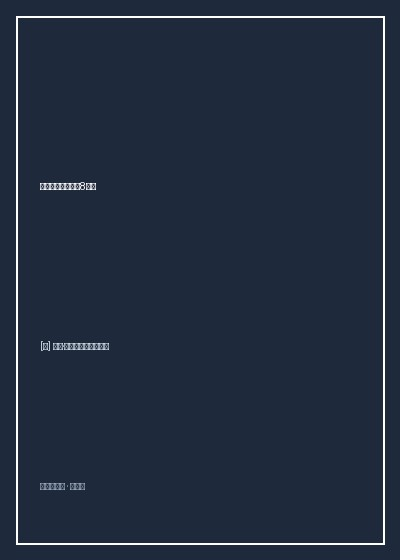

《电影艺术：形式与风格》

总体观点
电影绝非供大众消遣打发时光的廉价造梦机，而是一种融合空间几何学、时间控制术、视知觉心理学与叙事诗学的‘复杂形式系统’。波德维尔与汤普森坚持新形式主义分析传统，主张看电影必须超越单纯的‘剧情梗概与主题思想复述’，深入到镜头语言的微观肌理之中。电影的形式（Form）本身就是意义（Meaning）的发生场，每一个光圈的选择、镜头的焦距、视线的对焦与声音的交叠，都在精密调度着观众的心智期待与情感震颤。
电影形式系统由两大齿轮咬合驱动：‘叙事系统（Narrative System）’与‘非叙事系统（风格系统 Stylistic System）’。叙事系统负责处理故事（Story，按时间因果发生的全部事件总和）与情节（Plot，我们在银幕上实际看见和听见的重组呈现）的认知游戏；而风格系统则由四大视听技术支柱构成：场面调度（Mise-en-scene：置景、服装、布光、演员调度）、摄影（Cinematography：构图、色调、镜头焦距、景深与运镜）、剪辑（Editing：画面组接关系与连续性剪辑体系）以及声音（Sound：对白、音效与音乐的时空维度）。
电影风格的历史演进见证了人类视听语言从古典走向现代的探索壮举。从好莱坞黄金时代确立的‘看不见的连续性剪辑（180度轴线法则、视线匹配、动作顺接）’制造出透明无缝的现实主义幻觉；到爱森斯坦苏联蒙太奇学派利用镜头碰撞激发现代意识形态概念；再到法国新浪潮让·吕克·戈达尔用跳接（Jump Cut）无情打破幻觉、让观众直视胶片物质性本身，电影艺术在打破规则与重构视听秩序中，持续重塑人类认知世界的方式。
核心观点
-
1. 180度轴线系统与好莱坞古典连续性剪辑
在拍摄两个人对话或汽车追逐时，在主体之间想象一条无形的180度直线（行动轴线）。摄影机必须始终保持在轴线的一侧拍摄，确保银幕上左侧角色的视线始终看向右侧，右侧角色的视线始终看向左侧，维护观众大脑中稳定的三维空间方位感。
《马耳他之鹰》中亨弗莱·鲍嘉与彼得·洛尔的经典对手戏：连续性剪辑严格遵循视线匹配（Eyeline Match）与正反打镜头，即使摄影机角度在两人之间不断切分，观众丝毫不感到空间的错位与混乱。 -
2. 三点式布光（Three-Point Lighting）与人物雕刻
古典好莱坞的标准布光范式：主光（Key Light，提供最强主要照明并在脸部留下阴影）、补光（Fill Light，柔化消除阴影反差）与背光/轮廓光（Backlight，打在角色发丝与肩膀上，将人物与后方幽暗背景清晰分离出来，制造立体浮雕感）。
分析葛丽泰·嘉宝的特写镜头：背光为她金色的发丝勾勒出一圈圣洁发光的光晕，柔和的补光抹平了所有面部瑕疵，将好莱坞巨星从凡俗肉身升华为银幕女神。 -
3. 爱森斯坦理性蒙太奇与观念碰撞
镜头A与镜头B的组接，不仅仅是时间的推进，更应通过两者的并置冲突在观众脑海中激发出一个全新的抽象观念（A + B = C）。蒙太奇是视觉辩证法的最高体现。
《战舰波将金号》中著名的‘敖德萨阶梯’屠杀惨案：沙皇军队冰冷排枪射向逃难平民的特写，紧接着切入一只大理石狮子雕像仿佛受惊猛然跃起的三个连续雕像组接，在银幕上激发出‘石狮亦为之震怒咆哮’的磅礴革命隐喻。 -
4. 深焦摄影（Deep Focus）与民主化的视觉权力
奥逊·威尔斯在《公民凯恩》中与摄影师格雷格·托兰德合作，利用大广角镜头、强光照明与极小光圈，实现了前景（1米处）、中景与远景（10米处）的人物与物体同时处于绝对锐利的清晰对焦状态。这打破了传统浅景深强迫观众注视特写主体的专制，把视线探索的主动权归还给观众。
《公民凯恩》经典镜头：前景是母亲在签署将幼年凯恩抚养权转交给银行信托的协议，中景是懦弱的父亲在无力争辩，而透过后方敞开的窗户远景，小凯恩在白雪覆盖的草坪上快乐拉着‘玫瑰花蕾’雪橇无忧无虑滑雪，三层时空同框引爆戏剧张力。 -
5. 画外音（Offscreen Sound）与声画对位
声音不仅是画面的伴奏说明，更拥有独立构建银幕外空间的无上魔力。通过让声音的声源潜藏在四方画框之外（画外音），或者让画面的视觉基调与背景音乐的情感色彩发生激烈的声画对位（如残酷杀戮配欢快交响乐），电影能够爆发出令人毛骨悚然的荒诞心理张力。
弗朗西斯·科波拉《教父》结尾洗礼戏：镜头在教堂内迈克尔平静宣誓‘我弃绝魔鬼及其一切作为’的庄严管风琴圣乐，与街头手下五路出击血腥枪杀敌对家族教父的残酷刺杀画面之间交错剪辑，视听对位直刺极权伪善的灵魂深处。
全书结构
-
第一部分 电影制作与形式的本质
探访好莱坞与独立制片全流程（前期筹备、拍摄、后期调色剪辑），系统确立艺术形式系统的核心概念：模式、期待、动机、重复变化与统一性。
以《绿野仙踪》的叙事旅程为例，详细演示‘ABACA’音乐式回旋形式如何通过黄砖路与翡翠城的视觉符号在观众内心建立起渴望回家的情感闭环。 -
第二部分 叙事形式：故事与情节的架构
剖析经典叙事电影的因果关系、时间维度（次序/跨度/频率）、空间界定，深入探讨叙事信息的广度（全知视角/限制视角）与深度（客观展示/心理主观）。
对比希区柯克《后窗》的极限限制性主观视点：摄影机几乎寸步不离杰弗里斯的轮椅与长焦镜头，让观众与男主角同步陷入窥伺凶杀案的窒息悬疑之中。 -
第三部分 电影风格的四大视听支柱
全书篇幅最巨的技术解析：场面调度的几何与色彩、摄影的镜头景别/焦距/移动摄影、连续性与非连续性剪辑，以及声音的三维空间塑造。
深入拆解马丁·斯科塞斯《好家伙》著名的科帕卡巴纳夜总会三分钟一镜到底斯坦尼康长镜头，展现运镜调度如何让观众沉浸式体验黑帮特权的眩晕感。 -
第四部分 电影类型的分类与变迁
深入探讨西部片、歌舞片、黑帮片、科幻片与惊悚恐怖片的类型惯例（Iconography），分析类型片如何作为时代的心理晴雨表折射社会焦虑与意识形态更迭。
追踪好莱坞西部片从早期的‘文明战胜野蛮荒野’乐观拓荒叙事，到越战后新西部片《不可饶恕》反思暴力创伤的悲凉黄昏演进。 -
第五部分 电影批评与伟大名作深度精读
精选影史里程碑巨作（《公民凯恩》《东京物语》《八部半》《断了气》等），给出教科书级别的全片分镜头视听语言拉片精读范本。
全景细致拉片小津安二郎《东京物语》：解构其标志性的‘塌塌米50厘米低机位静态摄影’、180度违规越轴正面对话与空镜头静物，领悟东方物哀与无常哲思。